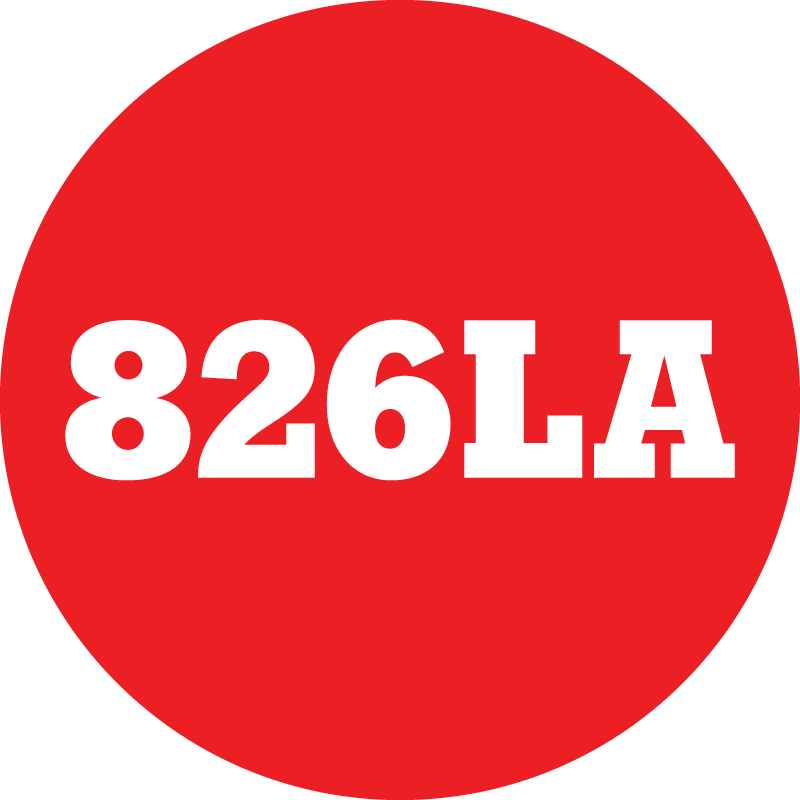
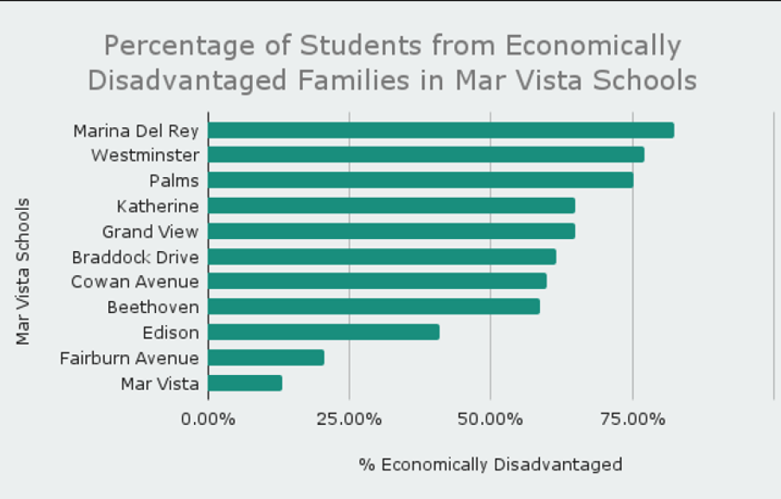
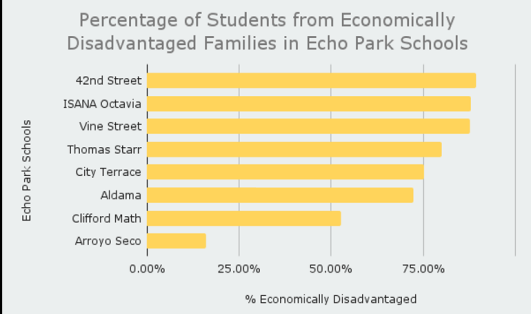
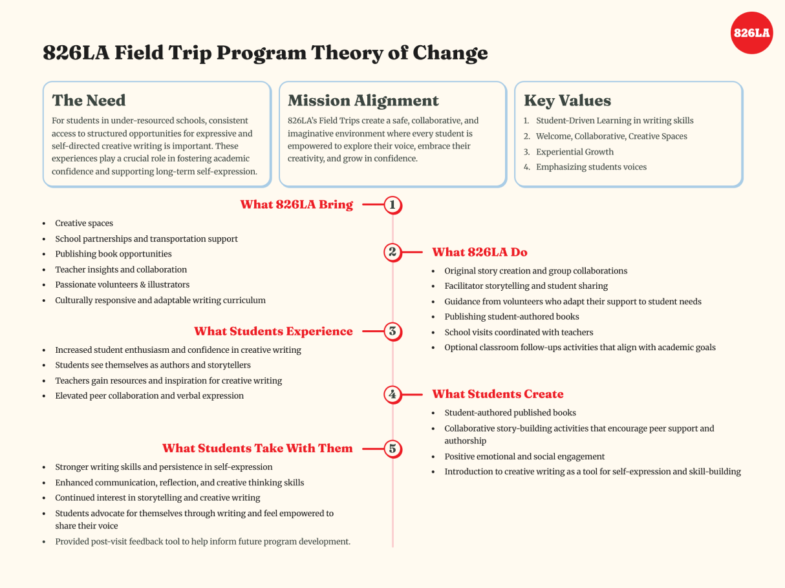

Observe the program
Ethnographic field observations grounded the evaluation in the setting where the experience happened.
826LA · Community-based program evaluation
Our team connected field experiences and community data to clarify program goals, equitable access, and future priorities.

What changed
Our insights informed future program planning. The Theory of Change and recommendations gave 826LA a structure for redefining goals and establishing areas of emphasis.
01 / The stakes
A positive field trip experience was only part of the picture.
826LA needed to understand how its creative writing field trips reached different communities, what supported learning after a visit, and where to focus future effort. Our evaluation connected the experience inside the program with the wider community context.
I worked as a researcher and analyst on a team using ethnographic research, interviews, demographic analysis, and thematic coding.
02 / The key insights
Demographic analysis showed that Echo Park programming reached a consistently high-need population, while the Mar Vista schools served were more economically varied. That made location and outreach strategy relevant to the organization’s equity goals.


Staff and teacher interviews pointed to a need for more structured follow-up, including classroom-ready writing prompts, extension activities, and post-trip projects. Teachers wanted ways to carry the experience back into the classroom.
Why this mattered
The next program decision needed to consider both who could access the experience and what could help learning continue afterward.
03 / Evidence into action
Our insights and Theory of Change model gave the team a new structure for clarifying organizational goals and identifying areas of emphasis for future programs.
Use demographic evidence to prioritize Echo Park outreach, reassess the Mar Vista context as neighborhoods change, and guide resource allocation and partnerships.
Strengthen pre-trip communication with teachers, clarify transportation support, and plan follow-up activities that help learning continue.
Create a localized feedback approach and a Theory of Change that connects program resources and activities with intended outcomes.
Resources Activities Experiences Intended outcomes

What changed
Our insights were used in future program planning, and the framework helped the organization redefine goals and establish priorities it could continue following.
04 / Behind the research
Ethnographic field observations grounded the evaluation in the setting where the experience happened.
Nine interviews added perspectives on delivery, student needs, and the experience beyond the visit.
Thematic coding and demographic analysis informed recommendations and the Theory of Change.
The evaluation included three ethnographic field observations and nine staff and teacher interviews. Demographic analysis drew on LA planning reports and school-level economic-disadvantage data.
The team delivered program recommendations, a Theory of Change model, and a presentation deck. The model links program activities to intended outcomes and gives future evaluation a shared starting point.
05 / What this project taught me
The work strengthened my ability to combine qualitative and quantitative evidence into a coherent story. It also showed why a useful evaluation should connect recommendations to the organization’s mission and future choices.
For this project, the value was a clearer framework for program priorities and planning. A future evaluation could use that framework to examine whether changes improve access and sustained learning.
A good conversation is a good start
I’m exploring UX research opportunities, and related roles in product insights, customer experience, and strategy.